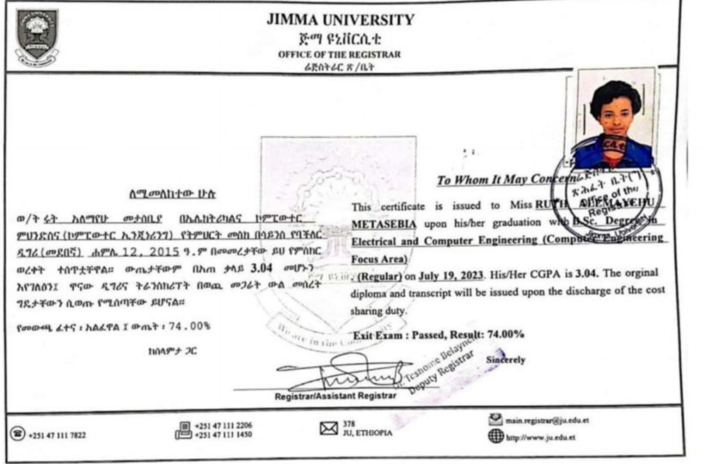
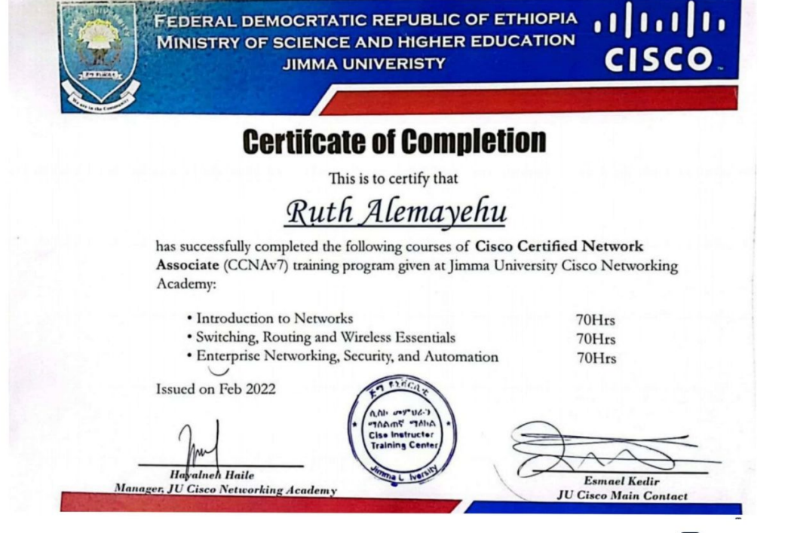
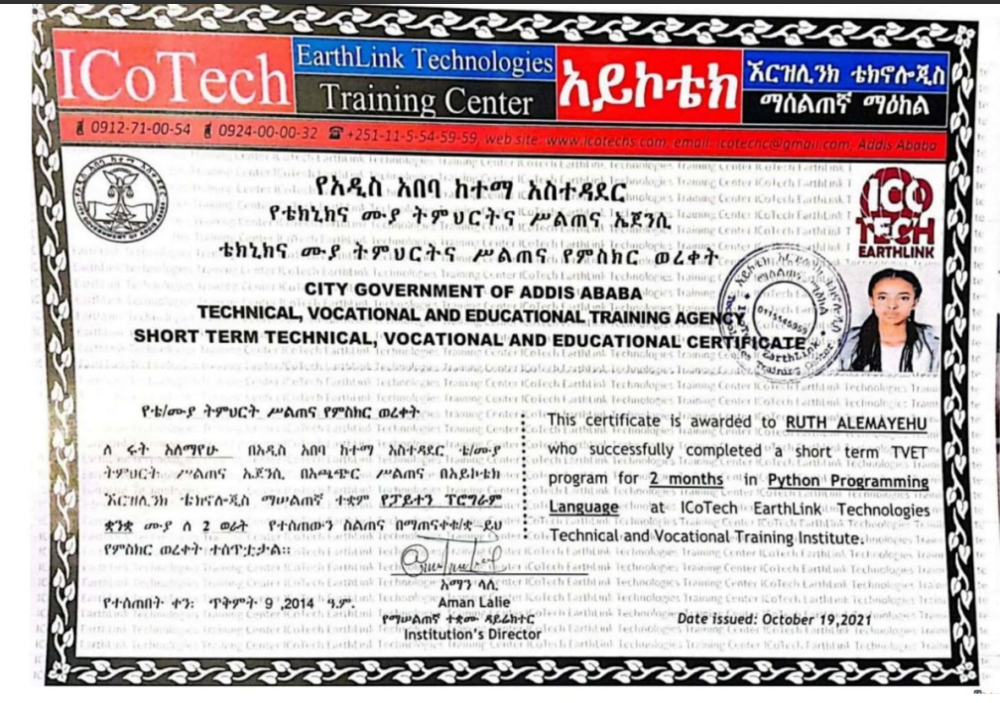
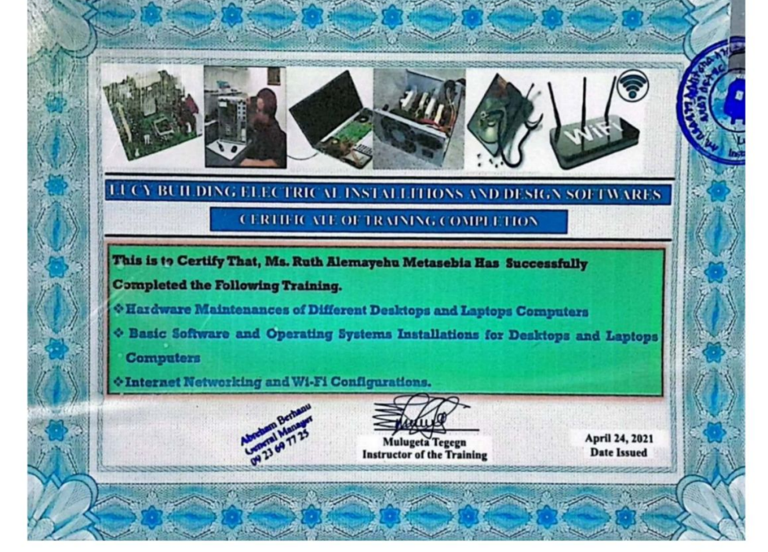

Bsc in Electrical and computer engineering
- graduated from Jimma University
- graduated on july 2023
- CGPA:3.04
- Exit exam: 74

Additional certificates:
- Cisco certified Network Assoiciate
Cico Networking Academy

- Mar 2022
Certification was issued
- Python Programming language
ICoTech Earthlink Technologies Training center

- Nov 2021
Certification was issued
- Hardware maintenances, software and
operating system Installation for desktop,
Internet networking and Wi-Fi configuration
Lucy Building Electrical Installation

- May 2021
Certification was issued